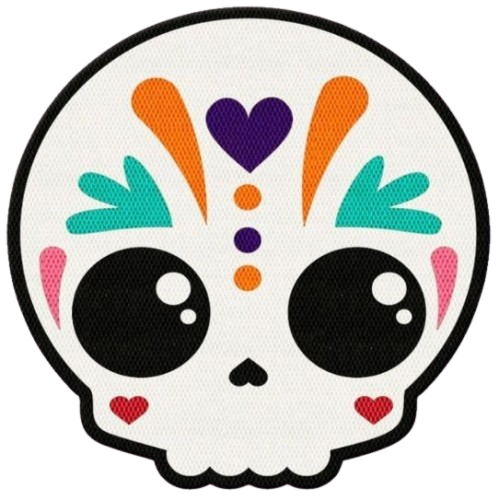
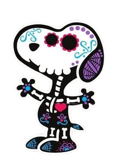

¡Feliz Día de los Muertos! 💀🌼 El Día de Muertos es una de las fiestas más importantes de México. Se celebra el 1 y 2 de noviembre para recordar y honrar a nuestros seres queridos que han fallecido. Esta fecha representa el amor, el respeto y el cariño por quienes siguen vivos en nuestros corazones. Con ofrendas, flores de cempasúchil, veladoras, fotos y alimentos, las familias recuerdan a sus difuntos y les dan un lugar especial en sus hogares. Cada cosa tiene un sentido: las flores guían el camino y las veladoras representan la luz. Esta tradición une colores, aromas y costumbres que pasan de una generación a otra. También nos ayuda a valorar la vida, unir a la familia y cuidar la cultura de México. 🕯️🌼 Quienes viven en nuestros recuerdos siempre están en nuestros corazones. 🌼🕯️